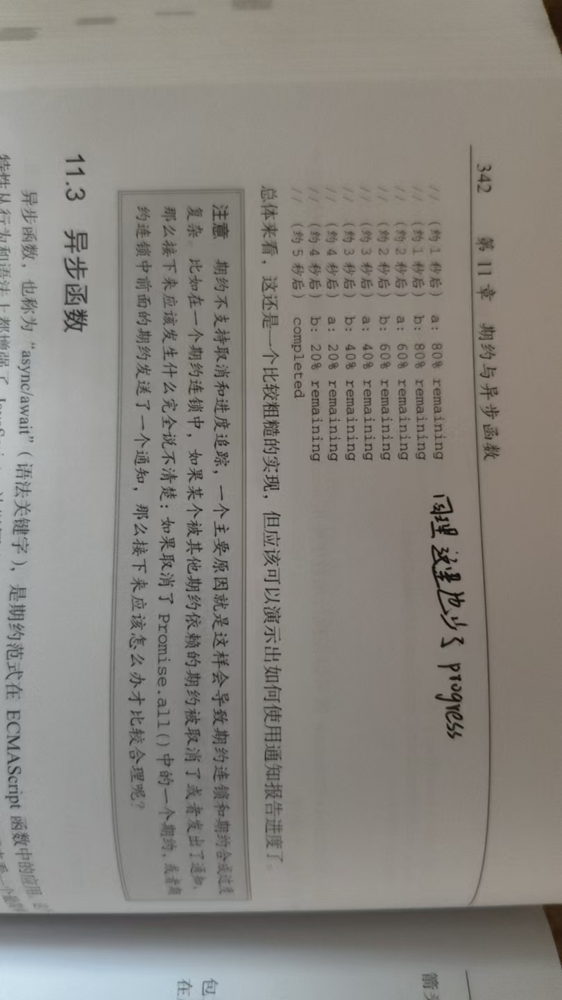

执行中的期约可能有不少离散的 '阶段', 在最终解决之前必须依次经过 , 某些情况下 , 监控期约的执行进度会很有用 , ECMAscript6 期约并不支持追踪 , 但是可以通过扩展来实现
一种实现方式是扩展 Promise 类 , 为它添加notify() 方法 如下所示:
class TrackablePromise extends Promise {
constructor(executor) {
const notifyHandlers = []
super((resolve, reject) => {
return executor(resolve, reject, (status) => {
notifyHandlers.map((handler) => handler(status))
})
})
this.notifyHandlers = notifyHandlers
}
notify(notifyHandler) {
this.notifyHandlers.push(notifyHandler)
return this;
}
}
这段代先是定义一个继承Promise的类 , 然后在实例化的时候创建一个新数组 , 使用super调用父类的构造函数 相当于 new Promise 执行里面的 executor函数 resolve和reject都是使用父类的reject , resolve , 至于 箭头函数里面的参数就要等到实例化的时候调用notify进行传参了 , 最后把数组挂载到实例对象上 , 后面 创建了 notify方法 , 用于添加方法到数组里面 , 之所以返回this是因为这样就是可以实现链式调用了 , 在.notify的时候就会往上找调用者 , 不写reutrn this 的话, 就会导致每次都要 Promise.notify
这段代码形成了一个闭包:因为这里的super 是父类构造函数来实现了 , 也就是这段代码是属于父类的 , 所以在executor 里面第三个参数引用了constructor作用域的notifyHandlers , 导致最终形成了闭包
这样 , TrackablePromise就可以在执行函数中使用notify()函数了。可以像下面这样使用这个函数来实例化一个期约:
let p = new TrackablePromise((resolve, reject, notify) => {
function countdown(x) {
if (x > 0) {
notify(`${20 * x}% remaining`)
setTimeout(() => countdown(x - 1), 1000)
} else {
resolve()
}
}
countdown(5)
})
这段代码在 p实例化的时候 传了一个箭头函数进TrackablePromise , 而在TrackablePromise里面不仅给传进来的箭头函数的三个参数进行赋值 , 还会执行传进来的箭头函数 , 就是因为 super 父类 Promise 会主动执行传入的函数，而箭头函数在这个过程中被间接调用，最终触发了 countdown(5)。
这个期约会连续5次递归地设置1000毫秒的超时。每个超时回调都会调用notify()并传入状态值 , 最通知处理程序简单地这样写:
p.notify((x) => console.asyncLog('progress', x))
p.then(() => console.asyncLog('completed'))
(约1秒后) progress 80% remaining
(约2秒后) progress 60% remaining
(约3秒后) progress 40% remaining
(约4秒后) progress 20% remaining
(约5秒后) completed
这段代码一开始看起是确实是怪怪的 前面已经说了 new TrackablePromise 的参数 箭头函数 在super里面已经执行了super是同步代码 , 记得 而 p.notify 是等到countdown(5) 开始执行之后,才执行到的 , 所以就导致了第一次progress 100% remaining根本没有进行输出 这是因为此时的 notifyHandlers 还是空的 , 等到了 p.notify 才有值 , 才会进行输出 , 当然控制台输出100% 是因为我改了代码 , 具体看源码
notify()函数会返回期约，所以可以连级调用，连续添加处理程序。多个处理程会针对收到的 每条消息分别执行一遍 如下:
p.notify(x => console.asyncLog('a', x))
.notify(x => console.asyncLog('b', x))
a 100% remaining
b 100% remaining
a 80% remaining
b 80% remaining
a 60% remaining
b 60% remaining
a 40% remaining
b 40% remaining
a 20% remaining
b 20% remaining
